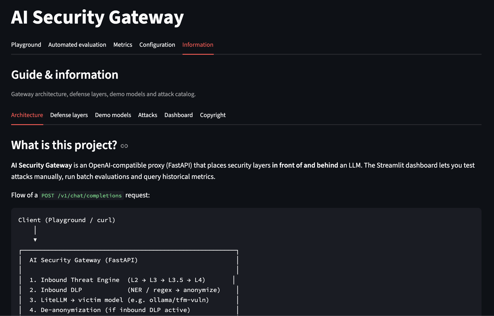

Why the client should only change a Base URL
Design note from my MSc thesis: an OpenAI-compatible AI Security Gateway.


Most LLM security demos live in the application: a wrapper around the SDK, a system prompt, a regex in front of
chat.completions.create. That does not survive a second client. The moment a notebook, an internal
chatbot and a batch job all talk to the same model, the control plane fragments.
The thesis constraint was the opposite: security as middleware, not as an SDK. If the gateway
speaks POST /v1/chat/completions, every existing OpenAI-compatible client can be pointed at a
new Base URL. No rewrite, no new library, no “please remember to call the sanitiser”.
What the proxy actually does
Traffic still ends at OpenAI, Anthropic, or a local Ollama model via LiteLLM. Before that, the request walks a five-phase pipeline:
- Threat (inbound) — sanitisation, length limits, OWASP-style heuristics, then an optional LLM-as-judge in parallel with a local DistilBERT classifier.
- DLP (inbound) — bilingual NER and regex; PII is replaced with reversible tokens before it leaves the perimeter.
- Router — the requested model is dispatched unchanged from the client’s point of view.
- Outbound — tokens are restored in the assistant reply; leaked secrets and honeytokens can be redacted or blocked.
- Observability — latency by phase, block reason, estimated cost, written asynchronously.
Controls are toggled per request with headers. With no headers, the gateway is a transparent proxy — useful for measuring the cost of each layer against a baseline.
from openai import OpenAI
client = OpenAI(
base_url="http://localhost:8000/v1",
api_key="not-used-by-the-gateway",
)
client.chat.completions.create(
model="gpt-4o-mini",
messages=[{"role": "user", "content": "Summarise this invoice…"}],
)
That is the whole integration. The application keeps its SDK. The security team keeps the pipeline.
Why this shape, not a plugin
A plugin is easy to skip. A reverse proxy is the same pattern as an API gateway in front of microservices: authentication, DLP and routing are not optional if the only route to the model is through the proxy. It is also how you test. You can run the same client against the unprotected upstream and against the protected profile and compare outcomes — which is the subject of the evaluation note.
Honest limits of the MVP: there is no enterprise authentication in front of the gateway, SQLite is not a SIEM, and regex plus a classifier will not catch every jailbreak. The claim is narrower — put the control where the traffic already is, and measure it.
Project page and repository: AI Security Gateway · github.com/r4fik1/ai-security-gateway.